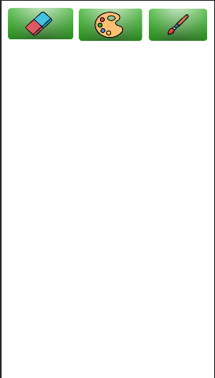

Acerca de
la aplicacion
¡Draw Paint es super facil de usar para los niños!
Nos encargamos de que la aplicacion solo se maneje a base de iconos que indiquen,
para que sirve cada boton, y asi poder identificar sus funciones. Teniendo en cuenta esto,
podemos ver que en la pantalla de dibujo tenemos cuatro botones en la parte superior.
